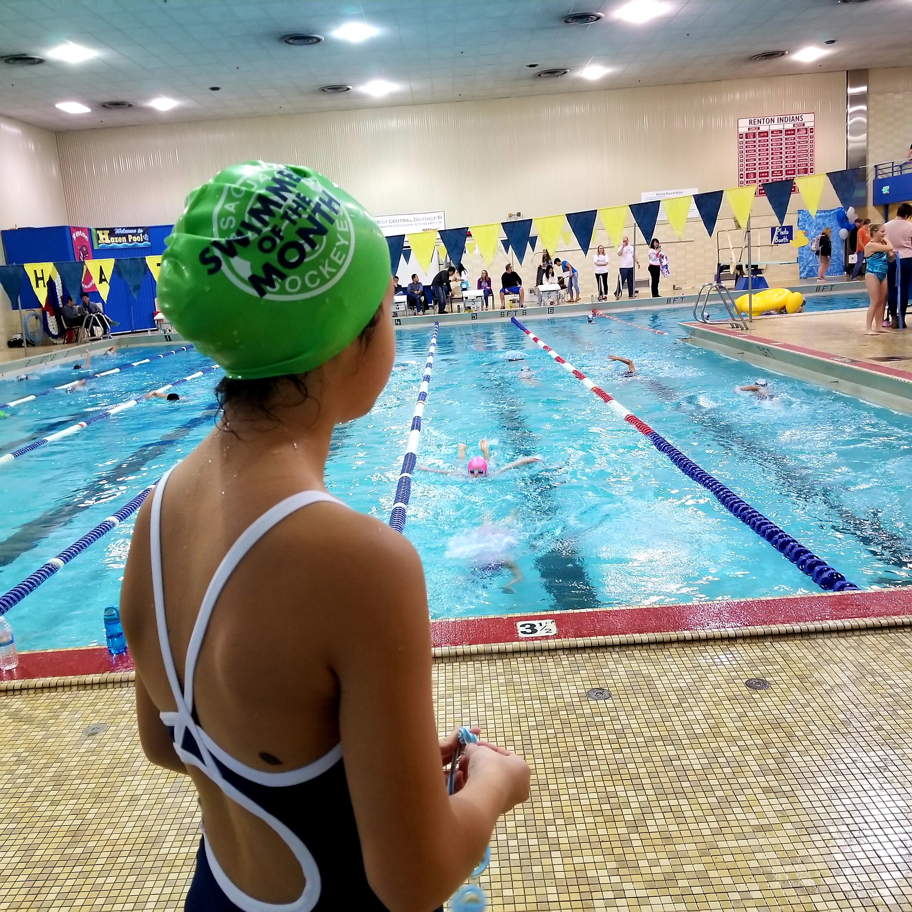

I am excited to share with everyone about my favorite cat, Sophie. Sophie is 11 years old and is very active. Although most cats don't like to swim, my Sophie enjoys it; and she is quite good at it. Like most cats, Sophie has a tendency to be lazy all day despite having a lot of potential. I have to reminder her everyday to do things like "You should probaby clean yourself." and "Is this where you fur goes?" As you can tell, Sophie keeps me busy but I love it.
What cat doesn't like fish? But Sophie brings a new meaning to the word LIKE (We'll get to some that later). For now, It is surfice to say Sushi is Sophie's favotire food. If I ask her what she want for dinner on Monday, she'd say Sushi. If I ask her on Tuesday, she'd say Sushi. If I ask her on Wednesday, you guess it.. She would say Sushi! Sadly, we have to limit on letting Sophie decides what's for dinner or we wold be having Sushi for dinner every night.
Who can say no to ice cream? Neither can Sophie. Sophie's favorite flavor is chocolate brownie. In fact, Sophie liks a lot of things with chocolate flavor. chocolate doughnuts, chocolate chips cookies, chocolate.. you name it.
No, Sophie does not like spice especially spicy food. But we are working on her though. She will come around eventually.
It turns out I don't actually have a cat. I have a daughter name Sophie who is kinda like a cat with plenty of potential and very finicky!
This is a picture of Sophie at one of the swim meets. For this particular meet Sophie has 4 events: